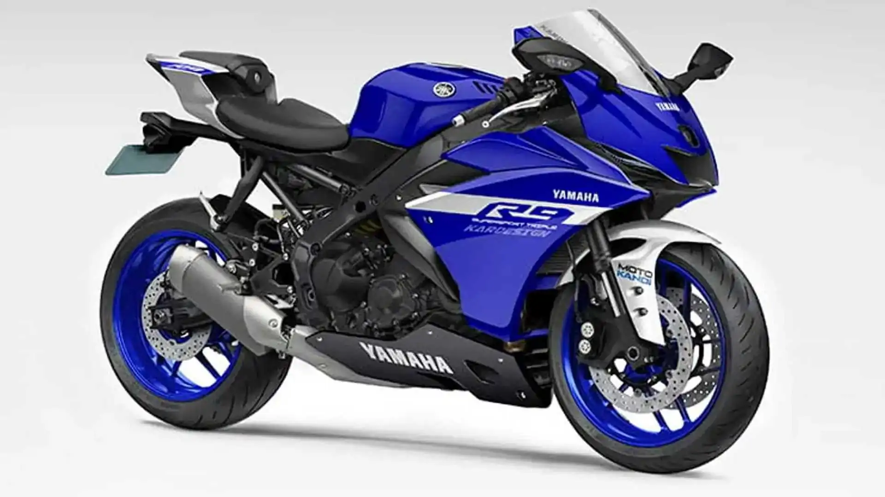

Uma esportiva de média cilindrada, a Ninja ZX-6R é conhecida pela agilidade, aceleração e desempenho em pistas, sendo uma favorita entre entusiastas de superesportivas.

Versátil e confortável, a Versys 650 é ideal para longas viagens e uso urbano. Une bom desempenho com posição de pilotagem ergonômica.

Com visual agressivo e motor bicilíndrico, a MT-07 é leve, divertida e uma das naked mais populares da Yamaha. Excelente para iniciantes e experientes.

A superbike topo de linha da Yamaha. Inspirada nas motos da MotoGP, a R1 entrega tecnologia avançada, controle eletrônico refinado e altíssimo desempenho.

Uma trail leve e acessível, ideal para quem busca a experiência aventureira da BMW em um pacote compacto, com bom desempenho on e off-road.

Uma superbike com tecnologia de ponta e potência extrema. A S 1000 RR é referência em desempenho e eletrônica embarcada no segmento esportivo.
Divisão de mercado entre as 3 marcas